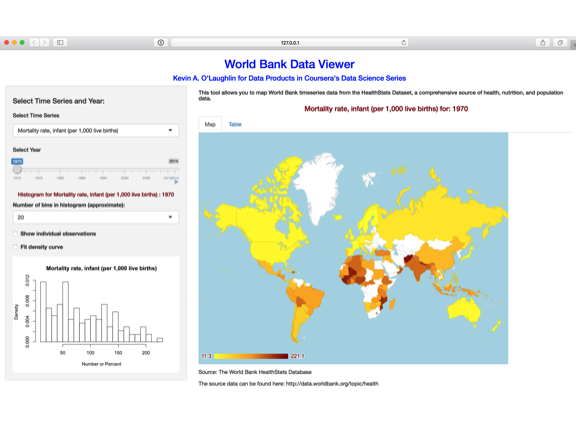

The World Bank publishes lots of healthcare and population time series data, by country, by year that offer a rich dataset for determining how countries compare and how countries improve on key health and population indicators. My application provides a flexible tool for viewing geographic maps of user selectable health and economic indicators for the years 1970 - 2014.
